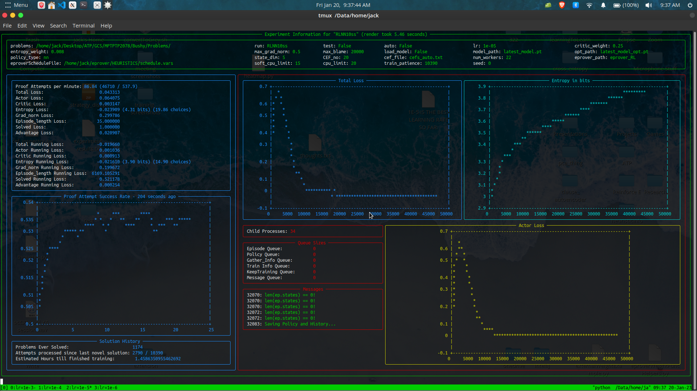
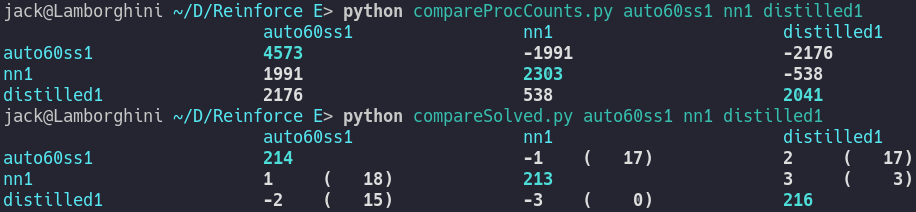
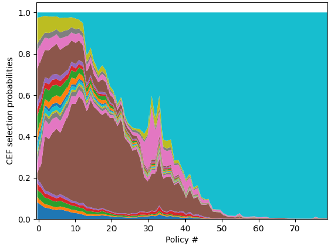

A Framework for
Reinforcement Learning
in the E Theorem Prover
Jack McKeown
Outline
- Saturation, Given Clause Selection, and E heuristics
- Reinforcement Learning and Proximal Policy Optimization
- Framework Details
- Experiments, Results, & Analysis using Framework
- Future Research
"Saturation-based" Theorem Proving
Saturation: computing the closure of a set of statements with respect
to a complete set of inference rules.
For a set consisting of axioms and the negation of an entailed conjecture, this closure must include false
A conjecture is therefore proved by searching for the empty clause by saturating the set $Ax\; \cup \sim C$
For a set consisting of axioms and the negation of an entailed conjecture, this closure must include false
A conjecture is therefore proved by searching for the empty clause by saturating the set $Ax\; \cup \sim C$
Given Clause Selection

Given Clause Selection in E
Example Clause Evaluation Function (CEF): Clauseweight(PreferGoals, 1,1,1)
RL / Policy Gradients
- States, Actions and Rewards
- Policy: $\pi(s) = a$ $\sum_a \pi(s,a) = 1$
- Goal: Maximize expected future discounted rewards
- Policy Gradient Loss:
average( negative log likelihood of actions taken * returns) - Reducing Variance:
average( negative log likelihood of actions taken * advantage) advantage = returns - predicted_returns
Proximal Policy Optimization (PPO)
- Simpler successor to Trust Region Policy Optimization (TRPO)
- Main Idea: Learn from the same data multiple times in
mini-batches
without drastically affecting the current policy. - A special loss limits the gradient so that:
$(1-\epsilon)$ $\pi_{old}(s,a)$ $\leq$ $\pi(s,a)$ $\leq$ $(1+\epsilon)$ $\pi_{old}(s,a)$
RL in E
- States: $($ $t$, $|P|$, $|U|$, $W(P)$, $W(U)$ $)$
- Actions: choice from a fixed set of CEFs
- Rewards: selection of clauses in the proof
Experiment Architecture

The Framework
- One main script for training/testing
- A terminal dashboard for training
- A format for storing training/testing results
- Scripts for analyzing results
The Main Training/Testing Script
parser = argparse.ArgumentParser()
parser.add_argument("--problems", default=os.path.expanduser("~/Desktop/ATP/GCS/MPTPTP2078/Bushy/Problems/"), help="path to where problems are stored")
parser.add_argument("--run", default="test")
parser.add_argument("--test", action="store_true")
parser.add_argument("--lunar_lander", action="store_true")
parser.add_argument("--auto", action="store_true")
parser.add_argument("--auto_sched", action="store_true")
parser.add_argument("--lr", type=float, default=5e-5, help="learning rate for optimizer")
parser.add_argument("--batch_size", type=int, default=4, help="number of episodes before training")
parser.add_argument("--ppo_batch_size", type=int, default=128, help="Batch size for PPO updates")
parser.add_argument("--n_units", type=int, default=100, help="Number of units per hidden layer in the policy")
parser.add_argument("--n_layers", type=int, default=2, help="Number of hidden NN layers in the policy")
parser.add_argument("--discount_factor", type=float, default=0.998, help="discount factor for RL")
parser.add_argument("--LAMBDA", type=float, default=0.95, help="PPO discount for interpolating between full returns and TD estimate")
parser.add_argument("--epochs", type=int, default=1, help="Epochs for each PPO training phase")
parser.add_argument("--critic_weight", type=float, default=0.4)
parser.add_argument("--entropy_weight", type=float, default=4e-5)
parser.add_argument("--max_grad_norm", type=float, default=0.5)
parser.add_argument("--max_blame", type=int, default=20_000, help="Maximum number of given clause selections to punish for a failed proof attempt...")
parser.add_argument("--load_model", action="store_true")
parser.add_argument("--model_path", default="latest_model.pt")
parser.add_argument("--opt_path", default="latest_model_opt.pt")
parser.add_argument("--policy_type", default="nn", choices=["nn", "constcat", "none", "uniform", "attn"])
parser.add_argument("--state_dim", type=int, default=5)
parser.add_argument("--CEF_no", type=int, default=20, help="Number of cefs in cef_file")
parser.add_argument("--cef_file", default="cefs_auto.txt")
parser.add_argument("--num_workers", type=int, default=1)
parser.add_argument("--eprover_path", default="eprover")
parser.add_argument("--eproverScheduleFile", default=os.path.expanduser("~/eprover/HEURISTICS/schedule.vars"))
parser.add_argument("--soft_cpu_limit", type=int, default=1)
parser.add_argument("--cpu_limit", type=int, default=2)
parser.add_argument("--train_patience", type=int, default=1*2078, help="How many proof attempts to wait for another solved problem before stopping training.")
parser.add_argument("--max_train_steps", default=1e6, type=int, help="Maximum number of PPO train batches to train on.")
parser.add_argument("--seed", type=int, default=0)
args = parser.parse_args()
Terminal Dashboard
Dashboard Implementation
- Rich Python library
- Termplotlib for plotting
- Panels are implemented as two custom methods:
(i.e. updateLossGraph() and getLossGraphPanel()) - Dashboard render method determines layout of panels
Analysis Format
- Custom Python class "ECallerHistory"
- Saved and loaded using torch.save() and torch.load()
- Great for inspecting with IPython
Analysis Scripts
Approaches Compared
- --auto: E's mode that analyzes a problem to choose a fixed heuristic
-
Round Robin:
A round-robin schedule over the 20 chosen CEFs
(A normal E heuristic with all ones for weights) -
Learned Categorical:
Randomly samples from a learned categorical distribution
(Ignores the RL state entirely) -
Distilled Categorical:
The previous policy reduced into a standard E heuristic.
(Removes the randomness and named pipe overhead) - Neural Network: A shallow (3-layer) neural network policy
Experiment Details
- CPU Limit for proof attempts: 60 seconds
- 75 seconds were given when testing the RL models to account for latency caused by the named pipe communication
Results on MPTPTP2078 Dataset
| --auto | Round Robin | Learned Categorical | Distilled Categorical | Neural Network | |
|---|---|---|---|---|---|
| Problems Proved | 228.2 | 232.0 | 231.6 | 232.2 | 231.3 |
| Given Clauses | 4407.8 | 2329.0 | 2377.4 | 2262.6 | 2013.0 |
| Fewer Given Clauses than --auto | 0 | 1895.6 | 1743.6 | 1899.0 | 1897.6 |
Analysis of Actor (MPT1152+1.p)


Analysis of Critic

Future Research
- Use the critic inside E with Monte-Carlo Tree Search
- If that works well, learn actor and critic using MCTS as in AlphaGo/AlphaZero/MuZero
Possible Framework Enhancements
- General code cleaning
(make the code more modular, etc) - Add explicit support for other
state, action, and reward representations - Add explicit support for other theorem provers